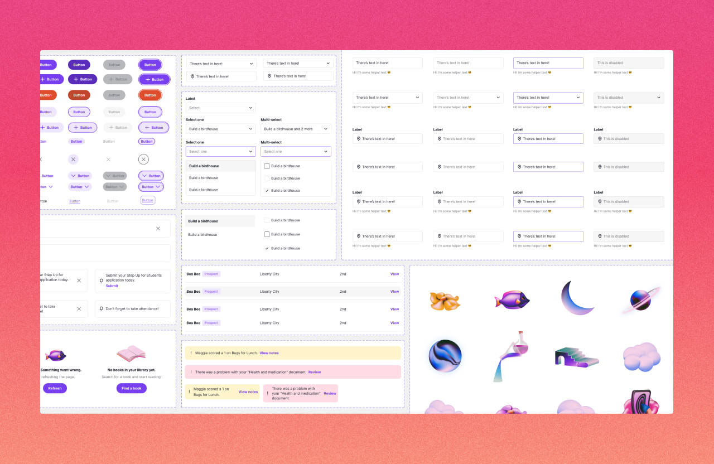

This case study is not available to the public. Contact for more information.
Primer, 2023
Primer went through a big transition in the year and a half I was there. We switched our whole product from Clubs to Microschools. With that transition came a lot of design changes! I had to transition our design system to one that had a similar audience, but a very different voice, brand, and purpose. We also needed to do it with speed as we had to get this out before the school year started. This impacted the entire school experience for 300 students, 20+ teachers, families, and admins.
